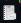
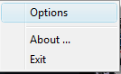
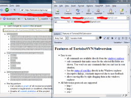

MailNoter
$ADSENSE_TOP$MailNoter is a small tool to help gathering notes from various applications, but specifically from browsers.
There are many tools and applications out there which help to keep a repository of personal notes, and even though some of them are very good at what they do, they all either use a proprietary format to store the notes (what would happen to my notes if the application isn't supported anymore and stops working on future OS versions?), only store notes as plain text, require non WYSIWYG input (e.g., Wikis), don't allow attachments, don't work if there's no network access, or are just plain ugly.
So I'm keeping my notes in my email account:- open storage format
- available from different computers and OS
- works offline
- usable with any email client
- usable through a web browser (no need to install anything if I'm at a place where I can't just install apps)
- easily searchable (either through the web interface (did I mention I'm using Gmail?)), through desktop search engines or the email client itself
And with Gmail, I can add tags to my notes very easily, which makes searching them even easier.
So how does MailNoter help here? (Please don't complain about the name: I had to choose something that isn't used by some other application, and "MailNoter" returned exactly two hits in Google: both because of a typo).
Without MailNoter, if I want to create a note from a part of a website or code snipped in the IDE, I had to:- create a new mail
- go back to the browser/IDE/whateverApplication
- select the part I want to keep as a note
- hit Ctrl-C to copy it to the clipboard
- go back to the new email I started
- paste the text in
- enter a meaningful subject for the email
- enter the "To:" address
- hit "Send"
- select the text in the browser/IDE/whateverApplication
- hit the hotkey (e.g., Win+PrintScreen)
- hit "Send"
Another nice feature of MailNoter: selecting files in Explorer and hitting the hotkey will create a new email, with the selected files already added as an attachment. Image files are not added as an attachment though, they're added inline.
So, as I said: it's a small tool which doesn't do much. But it helps me with gathering my notes.
You can get it from the download page.
Setup
$ADSENSE_INPAGE$After downloading MailNoter, unzip the executable file. After
a doubleclick, you will see a new icon in the system tray:

A right-click on that icon shows a context menu:

A click on the "options" entry brings up the configuration dialog:

Here you can set the hotkey, the "from" address (most email clients
will ignore that, so you can leave that empty) and of course the
"To:" address. You should enter here your own email address.
Hint: some email providers allow you to add custom parts to your
address, for example myemailaddress+notes@example.com.
The part after the + is then ignored, but you can use that
to set up a filter to automatically move mails arriving at that
address to a "notes" folder in your email account.
You can also set here that MailNoter automatically starts when you log in to your workstation.
You can also modify the look of the "appendix" which is added automatically for html content, which by default is a one row table containing the source URL.
Email client
For MailNoter to work, you must have an email client installed which supports Simple MAPI. Most email clients support that, but you might have to set your email client as the "default" email client first.
Also, MAPI was created before HTML mails existed, so there is no way to tell an email client that it should use HTML mails. To avoid the email client use plain text instead of HTML mails, you have to configure your client to create HTML mails by default, not text mails. But that's the default for most email clients anyway.
Capture content
After you've set everything up and MailNoter is running, you
can start capturing content. For example, go to a website with your
preferred browser, select an interesting part of the page, hit the
hotkey and see MailNoter open a new email for you with your
default email client:

{kind=link}
To report problems, please use the issue tracker.